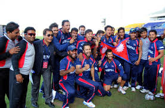

� 1947 General Madan instituted the 'Bishnu Trophy' for league tournaments.
� 1952 Madan Memorial Shield instituted.
� 1966 Maharaj Kumar Jugal Kishwore Trophy instituted.
� 1965 Ram Muni Trophy instituted
� 1980 Jai Trophy instituted by the National Sports Council.
� 2000 District & Regional level Under-17 Tournaments initiated.
� 2014 NPL, a franchise-based Twenty20, One Day & Two Day event, was initiated.

Old is gold
Cricket was introduced to Nepal by the ruling Rana dynasty following the return of members from studies in England in the 1920s. Though the game was kept very much for themselves and other members of the elite, the Cricket Association of Nepal was formed in 1946 to promote cricket amongst the aristocracy. When King Tribhuvan overthrew the Rana regime in 1951, cricket began to spread to the rest of the population. In 1961, in an effort to promote cricket in the whole of Nepal, the Cricket Association of Nepal became part of the National Sports Council. Nevertheless, the game tended to be limited to Kathmandu until the 1980s. �ICC and ACC Membership
Improvements to the communication and transport infrastructure in Nepal allowed the game to expand outside Kathmandu in the 1980s, and Nepal became an Affiliate Member of the ICC in 1988. A major development programme was begun in the early 1990s, with regional and district tournaments established and cricket being promoted in schools. Nepal became an Associate Member of theACC in 1990 and became a full member in 1994. Interest in cricket increased quickly in the 1990s, and demand to play was such that the number of teams in tournaments had to be restricted until more facilities were built. Nepal became an Associate Member of the ICC in 1996, which was the year the national side played for the first time, in the ACC Trophy in Kuala Lumpur. Nepal finished fourth out of six teams in their first round group in this competition, beating Brunei and Japan.
�Governing Body
Main article: Cricket Association of Nepal
The Cricket Association of Nepal is the official governing body of the sport of cricket in Nepal. It was formed in 1946.

click here to get live streaming
enjoy!!!
Despite unprecedented success on the field, including victories over Hong Kong and Afghanistan at the 2014 ICC World Twenty20, Nepal went through some turmoil off the field in 2014 with a boycott of the national one-day tournament by the national players with the captain Paras Khadka slamming the Cricket Association of Nepal for their treatment of national players.
The board then came under an investigation by the Commission for Investigation into Abuse of Authority. Later, CIAA filed a case against 18 CAN members including the then President Tanka Aangabuhang, after finding them guilty of misusing around Rs. 14.31 million, which was to be used for developing the game in the country instead. This resulted in several CAN members stepping down from their posts on moral grounds. In May, members of CAN filed a no-confidence motion against president Tanka Angbuhang Limbu, after the running of the Nepal Premier League was outsourced to a private sports management firm.
Design by BIBEK BASHYAL